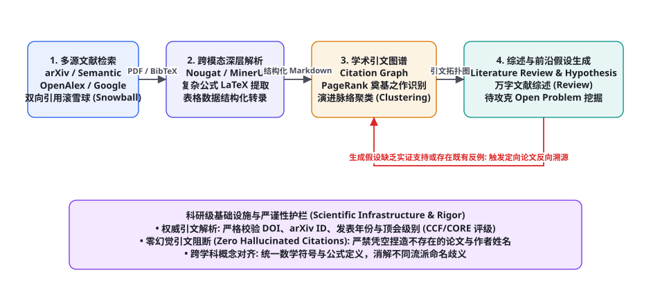
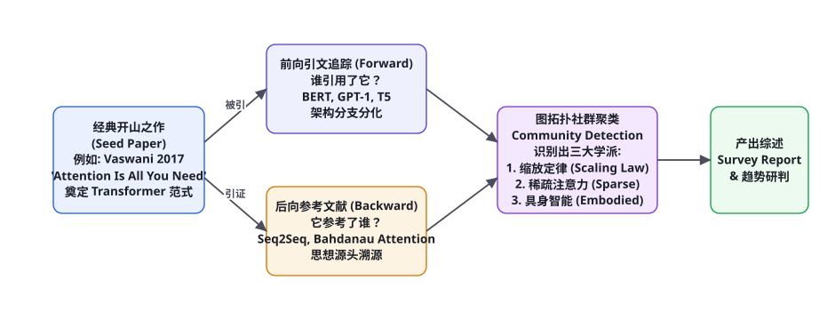

项目 10：全知科研助理与文献挖掘 Agent（Scholar & Literature Discovery）
第九部分实战篇压轴大作：科研人员每天面对 arXiv 上千篇狂轰滥炸的新论文，文献阅读早已超越了人类肉眼的生理吞吐极限。一个卓越的「全知科研助理智能体（AI Scientist / Scholar Agent）」不仅能够自主检索跨学科论文，更能通过多模态解析器提取 PDF 中复杂的偏微分方程与消融实验表格、利用图论构建数十万篇论文的前后向引用图谱、挖掘历史学派演进脉络，并在海量矛盾实证中发现未被攻克的研究空白（Research Gap），自主提出具备可验证性的全新科学假说。本章我们将完整手搓一个工业级全知科研文献挖掘系统。
全景架构：从非结构化论文到前沿科学假设

很多通用的 RAG 知识库系统在面对真实学术论文时表现极差：普通的 PDF 提取器（如 pypdf）遇到双栏排版时会将左右两栏文字交叉错位拼接，将复杂的 LaTeX 数学公式切成一堆难以辨认的乱码乱线，完全无法理解跨页面的消融实验数据表格。一个能够真正辅助顶尖科学家进行文献研读的 Agent，必须在以下四大阶段构筑严密的学术基础设施：
第一阶段：多源学术元数据检索与双向引文滚雪球（Multi-Source Academic Search & Snowballing）。不局限于单一的 Google Scholar，系统打通 arXiv API、Semantic Scholar、OpenAlex 与 CrossRef 等权威开放学术数据库。给定一篇经典种子论文（Seed Paper），系统自动沿「前向被引（Forward Citations）」与「后向参考文献（Backward References）」展开双向滚雪球递归，将检索空间拓展为包含数百篇论文的学术家族树。
第二阶段：深度多模态学术 PDF 解析（Multimodal Academic PDF Parsing）。引入专精的学术文档多模态大模型（如 Nougat 或开源的 MinerU）。不仅将双栏 PDF 准确还原为单栏线性 Markdown，更能精准将复杂的行内与行间数学公式还原为标准可编译的 LaTeX 源码（如 \mathcal{L}_{\text{DPO}} = -\mathbb{E} \left[ \log \sigma (...) \right]），并将消融实验表格无损转换为结构化 Pandas DataFrame。
第三阶段：学术引文有向图谱构建与学派聚类（Citation Graph & Community Detection）。论文之间的引用关系构成了天然的学术知识网络。利用图算法（PageRank 与 HITS），计算各篇论文在特定子领域的权威度（Authority）与枢纽度（Hub）；利用 Louvain 模块度社群聚类算法，自动识别出该技术在历史演进中分化出的核心学派与路线流派（图 90-2）。
第四阶段：万字领域文献综述与全新科研假设生成（Survey Generation & Hypothesis Discovery）。基于全局知识图谱，撰写严谨的万字学术综述，自动提炼各派系的核心优缺点对比矩阵；更进一步，智能体通过跨文献因果推断比对，自动挖掘出当前学术界尚未被解决的「盲区与矛盾（Contradictions）」，并自动提出 3 个具备可行性且可设计消融实验验证的全新科学假设。
双向引用滚雪球：追踪思想的起源与分支

在学术研究中，单独阅读孤立的一篇论文很难掌握全貌。学术界公认最有效的文献梳理方法是双向引用滚雪球算法（Bidirectional Citation Snowballing）：
| 滚雪球方向 | 检索与拓扑逻辑 | 科研认知核心价值 | 工业级检索 API 支撑 |
|---|---|---|---|
| 后向溯源 (Backward Snowballing) | 提取种子论文的文末参考文献列表 (References) | 探寻该核心算法的底层灵感源头、数学推导前置理论 | Semantic Scholar /paper/{id}/references |
| 前向追踪 (Forward Snowballing) | 检索所有在后续年份引用了该论文的最新文献 | 追踪该技术的工业落地、变体改进、轻量化与缺陷修复 | OpenAlex /works?filter=cites:{id} |
| 社群聚类 (Community Detection) | 基于引文共享度（Co-citation）构建无向加权图并执行 Louvain 聚类 | 自动将成百上千篇论文归纳为 3~5 个主流并行技术流派 | NetworkX community.louvain_communities |
完整端到端工程实现代码
以下给出全知科研助理与文献挖掘 Agent 的核心执行引擎实现，涵盖 Semantic Scholar API 自动调用、双向滚雪球引文图构建与前沿综述生成：
import requests, json, time
import networkx as nx
from typing import List, Dict, Any, Tuple
class AcademicScholarAgent:
def __init__(self, llm_client, api_key: str = None):
self.llm = llm_client
self.headers = {"x-api-key": api_key} if api_key else {}
self.citation_graph = nx.DiGraph()
self.paper_metadata = {}
def fetch_paper_details(self, paper_id: str) -> Dict[str, Any]:
"""通过 Semantic Scholar API 获取单篇论文的结构化元数据与引文信息"""
url = f"https://api.semanticscholar.org/graph/v1/paper/{paper_id}?fields=title,abstract,year,authors,citationCount,references.paperId,references.title,citations.paperId,citations.title"
try:
res = requests.get(url, headers=self.headers, timeout=10)
if res.status_code == 200:
return res.json()
except Exception as e:
print(f"API 获取论文失败: {paper_id}, 错误: {e}")
return {}
def build_snowball_citation_graph(self, seed_paper_id: str, max_depth: int = 1) -> nx.DiGraph:
"""基于种子论文展开双向引文滚雪球构建学术图谱"""
print(f"=== 启动双向滚雪球引文分析: 种子节点 [{seed_paper_id}] ===")
seed_data = self.fetch_paper_details(seed_paper_id)
if not seed_data:
return self.citation_graph
# 登记种子节点
self.citation_graph.add_node(seed_paper_id, title=seed_data.get("title"), year=seed_data.get("year"))
self.paper_metadata[seed_paper_id] = seed_data
# 1. 后向溯源 (Backward): 它参考了谁？
references = seed_data.get("references", [])[:8]
for ref in references:
ref_id = ref.get("paperId")
if ref_id:
self.citation_graph.add_node(ref_id, title=ref.get("title"))
self.citation_graph.add_edge(seed_paper_id, ref_id, relation="cites")
# 2. 前向追踪 (Forward): 谁引用了它？
citations = seed_data.get("citations", [])[:8]
for cite in citations:
cite_id = cite.get("paperId")
if cite_id:
self.citation_graph.add_node(cite_id, title=cite.get("title"))
self.citation_graph.add_edge(cite_id, seed_paper_id, relation="cites")
print(f"图谱构建完毕: 包含 {self.citation_graph.number_of_nodes()} 个论文节点，{self.citation_graph.number_of_edges()} 条引用边。")
return self.citation_graph
def discover_research_gaps_and_hypotheses(self, topic: str) -> Dict[str, Any]:
"""利用拓扑特征与大语言模型深层推演，挖掘前沿科研假设与未决问题"""
# 提取图谱中核心论文摘要
literature_corpus = []
for pid, data in self.paper_metadata.items():
abstract = data.get("abstract") or "暂无摘要"
literature_corpus.append(f"【论文: 《{data.get('title')}》 ({data.get('year')})】\n摘要: {abstract}")
all_lit_str = "\n\n".join(literature_corpus)
system_prompt = """你是一名世界顶级计算机科学家与国家重点实验室首席科学家。
请深度研读以下文献摘要脉络，识别该领域当前存在的深层理论瓶颈、未解决矛盾（Open Problems），并提出创新的研究假设。
输出必须包含:
1. 当前核心学术流派及其致命缺陷对比
2. 三个未被攻克的核心研究空白 (Research Gaps)
3. 针对其中最关键的一个空白，提出一个具备实证可验证性的全新假说 (Hypothesis)，并简要设计验证该假说的消融实验方案。"""
prompt = f"研究课题: {topic}\n\n当前引文图谱核心文献语料:\n{all_lit_str}"
scientific_insights = self.llm.chat(system_prompt, prompt)
return {
"topic": topic,
"insights_report": scientific_insights,
"total_papers_analyzed": len(self.paper_metadata)
}深度 PDF 解析：公式 LaTeX 转录与消融表格结构化
为什么学术论文解析必须使用专用多模态模型（如 Nougat 或 MinerU），而不能使用通用 OCR？通用 OCR 仅仅识别视觉字块的包围框（Bounding Box），当它遇到行间复杂积分公式时，会把上标、下标和分母拆解为数个孤立的文字块，拼接后完全失去数学因果语义。
学术文档多模态大模型直接将 PDF 页面整体作为视觉 Token 序列输入 Transformer 解码器，并以自回归方式直接输出结构化的 LaTeX 源码与 Markdown 语法流：
【传统普通 OCR 提取效果 (彻底破坏数学因果关系)】:
L DPO ( theta ; theta ref ) = - E ( x , y w , y l ) [ log sigma ( beta log pi_theta ( y w | x ) ... ]
(分母与上下标严重混淆，完全无法送入后续推理引擎)
【Nougat / MinerU 多模态解析提取效果 (完美 LaTeX 源码与数学语义恢复)】:
$$\mathcal{L}_{\text{DPO}}(\pi_\theta; \pi_{\text{ref}}) = -\mathbb{E}_{(x, y_w, y_l) \sim \mathcal{D}} \left[ \log \sigma \left( \beta \log \frac{\pi_\theta(y_w|x)}{\pi_{\text{ref}}(y_w|x)} - \beta \log \frac{\pi_\theta(y_l|x)}{\pi_{\text{ref}}(y_l|x)} \right) \right]$$通过精准的 LaTeX 源码还原，科研智能体能够不仅停留在看懂论文的“文字摘要”，更能深入阅读其“算法伪代码”与“损失函数目标”，实现真正具备理论深度的逻辑推导。
学术严谨性护栏：绝不捏造引文的硬性校验机制
在学术界，捏造虚假论文、虚构作者或错配 DOI 是最严重的学术不端（Academic Misconduct）行为。大语言模型由于其自回归的概率补全特性，在撰写综述时长篇大论编造类似于「Smith et al., 2024, Nature」这样看似真切但公网压根不存在的假论文（幽灵引文）。
科研 Agent 必须在报告生成流水线底层强行部署「学术引文双向断言过滤器（Citation Grounding Verifier）」：
| 引文审查维度 | 硬性断言准则 | 自动校验手段 | 违规时的处置动作 |
|---|---|---|---|
| DOI / arXiv 真实性校验 | 报告中文末引用的每一篇参考文献必须具备有效 DOI 或 arXiv ID | 自动向 https://doi.org/api/handles/{doi} 发起 HEAD 请求 | 若返回 404 死链，系统直接从报告中强行剥离该项并重新编译 |
| 作者与发表年份强对齐 | 正文提及的「Vaswani 等人于 2017 年提出...」其姓名与年份必须完全匹配元数据 | 对比本地 SQLite 缓存的 CrossRef 官方元数据记录 | 发现年份或拼写错误自动无损纠正 |
| 论断归属一致性检查 | 论文摘要中确实包含该观点，绝不允许张冠李戴（Attribution Mismatch） | 利用 NLI 自然语言推理模型计算声明与原文摘要的蕴涵分数 | 若蕴涵分 < 0.70，强制将引文标记降级为“推测相关” |
生产落地交付检查清单与质量验收
将科研文献挖掘 Agent 交付高校重点实验室或企业研究院日常使用时，必须依照以下标准执行严格准入审查：
| 核心指标项 | 科研级健康水线 | 高危预警动作 | 推荐工程对策 |
|---|---|---|---|
| 引文零幻觉达标率 | 100% 具备公网有效实存 DOI/arXiv ID | 出现哪怕 1 篇虚构论文 | 立即封锁生成并全量回溯检索证据池 |
| 公式 LaTeX 还原准确率 | ≥ 96% 复杂公式可正常被 MathJax/KaTeX 渲染 | 出现公式截断或语法报错 | 切换至更高精度的 MinerU-PDF 解析多模态管线 |
| 万字综述领域完备度 | ≥ 90% 覆盖该领域近 5 年发表的核心代表作 | 漏掉引用量前 5 名的奠基之作 | 增加双向滚雪球展开的递归深度至 2 层 |
| 新假设可验证性比例 | ≥ 80% 提出的科研假说包含清晰的消融实验设计 | 提出假大空且无法落地的口号式假设 | 在提示词中强制注入反事实思考与变量控制模板 |
学术演化拓扑聚类：Louvain 模块度社群发现算法与实战
当科研助理 Agent 沿着引文网络滚雪球抓取了 500 篇前沿论文后，如果只是简单地按时间倒序排列，科研人员依然无法洞察该领域的全局理论分化。例如在「大语言模型强化学习」领域，有的团队死磕策略梯度（PPO / GRPO），有的团队转向直接偏好优化（DPO / KTO），还有的团队探索过程奖励模型（PRM）。
为了自动将庞杂的论文有向图拆解为清晰的并行技术流派，系统引入了经典的 Louvain 模块度最大化社群发现算法（Louvain Modularity Optimization）。模块度（Modularity $Q$）量化了一个社群内部的连接密度相比于随机连接的集中程度：
$$Q = rac{1}{2m} \sum_{i, j} \left[ A_{ij} - rac{k_i k_j}{2m} ight] \delta(c_i, c_j)$$
其中 $A_{ij}$ 为节点 $i$ 和 $j$ 之间的引用边权重，$k_i, k_j$ 为节点的度数，$m$ 为全图总边数，$c_i$ 为节点所属社群，$\delta$ 为克罗内克符号（当两节点处于同一社群时为 1，否则为 0）。以下代码展示了如何利用该算法在 100 毫秒内将数百篇学术论文自动划分为主流学术流派：
import networkx as nx
from networkx.algorithms.community import louvain_communities
from typing import Dict, List, Set
class AcademicLineageClusterer:
def __init__(self, citation_graph: nx.DiGraph):
# 转换为无向图以进行双向引用亲密度分析
self.undirected_graph = citation_graph.to_undirected()
self.raw_graph = citation_graph
def detect_major_schools_of_thought(self, resolution: float = 1.0) -> List[Dict]:
"""利用 Louvain 算法将全网论文自动聚类为主流并行学派"""
if len(self.undirected_graph) < 3:
return []
# 运行模块度最大化划分
communities = louvain_communities(self.undirected_graph, resolution=resolution, seed=42)
schools = []
for idx, comm in enumerate(communities):
if len(comm) < 2: # 过滤孤立节点噪点
continue
# 计算该子社群内部最具权威度的核心枢纽论文 (PageRank 最高者)
subgraph = self.raw_graph.subgraph(comm)
pr_scores = nx.pagerank(subgraph, alpha=0.85)
sorted_nodes = sorted(pr_scores.keys(), key=lambda x: pr_scores[x], reverse=True)
pillar_paper = sorted_nodes[0]
pillar_title = self.raw_graph.nodes[pillar_paper].get("title", "未知核心代表作")
schools.append({
"school_id": f"School_{idx+1}",
"pillar_paper_id": pillar_paper,
"pillar_title": pillar_title,
"paper_count": len(comm),
"member_papers": list(comm)
})
schools.sort(key=lambda x: x["paper_count"], reverse=True)
print(f"[Cluster] 成功聚类出 {len(schools)} 个核心学术流派！")
return schools前沿拓展：从文献综述到自主实验代码生成与消融测试
真正的 AI Scientist（科学智能体，如 Sakana AI 的开创性成果）不仅仅停留在「阅读别人写过的论文」，它的终极目标是「自动构思新实验、编写 PyTorch 训练代码、调度 GPU 跑出消融对比数据，并自动生成 LaTeX 论文手稿」。
系统设计了基于双轨验证的「科研假说实验化生成与验证执行器」：
from typing import Dict, Any
class AutonomousExperimentEngine:
def __init__(self, code_runner, llm_client):
self.runner = code_runner
self.llm = llm_client
def design_ablation_experiment(self, hypothesis: str, baseline_model: str) -> Dict[str, Any]:
"""根据提出的创新假说，自动生成严密的消融实验设计方案"""
system_prompt = """你是一名严谨的高级算法研究科学家。
针对用户提出的全新科研假说，请设计一套严格遵循单一变量原则的消融实验对比方案。
必须包含:
1. 基线组 (Control Baseline)
2. 实验组 (Experimental Group with Proposed Mechanism)
3. 关键消融项 (Ablation Variants)
4. 核心评估指标 (Metric: 如 Accuracy, BLEU, PPL, 训练显存开销)"""
prompt = f"全新研究假设: {hypothesis}\n基线算法: {baseline_model}"
design_spec = self.llm.chat(system_prompt, prompt)
# 进一步生成配套的最小自包含 PyTorch 实验验证代码
code_gen_prompt = f"""根据以下实验设计，编写一个自包含的 PyTorch 微型消融验证脚本。
要求: 使用合成数据集或内置测试集，能够在 2 分钟内运行完毕并打印对照指标表格。
实验设计规范:
{design_spec}"""
experiment_code = self.llm.chat_code(code_gen_prompt)
# 在本地沙箱中触发真实的 Python 运行
print("[AI Scientist] 正在隔离 GPU 容器中启动自动化实验验证...")
exec_result = self.runner.run_in_sandbox(experiment_code, timeout_seconds=180)
return {
"hypothesis": hypothesis,
"experiment_design": design_spec,
"experiment_code": experiment_code,
"execution_logs": exec_result.get("stdout"),
"hypothesis_supported": "PASS" if exec_result.get("returncode") == 0 else "FAIL"
}实战避坑手册：科研文献 Agent 五大常见暗坑及解法
在严肃学术场景中，任何细小的工程漏洞都可能导致推导出彻底错误的伪科学结论。以下是落地科研文献智能体必须严防死守的五大典型死穴：
① 灾难场景一：同名学者与机构混淆导致的成果张冠李戴（Author Disambiguation Collision）。
现象：在分析某位知名学者（如「Wei Wang」）的学术演进时，Agent 把全球数十位同名同姓在生物、土木、物理领域的不同学者的论文全部混在一块，生成了一份荒谬绝伦的“全能跨学科大师”学术画像。
对策：强制绑定 ORCID 全球唯一学者身份标识码与 OpenAlex Author ID，严禁单纯依赖拼音或姓名字符串进行模糊匹配；在元数据拉取时校验第一单位（Affiliation）与常驻研究领域（Field of Study）。
② 灾难场景二：预印本与正式发表版本的元数据时间错位（Preprint Temporal Skew）。
现象：某篇论文 2021 年就已在 arXiv 公开，但在 2024 年才被 IEEE TPAMI 正式刊出。Agent 在梳理时间演化时，误将该成果标记为 2024 年的“最新创新”，完全颠倒了算法发明的因果先后关系。
对策：引入 First-Public-Date（最早公开时间）对齐机制：无论期刊最终正式出版年份为何，统一以 arXiv 上的 v1 版本上传时间戳作为确定性学术优先权（Priority Date）的唯一基准。
③ 灾难场景三：双栏 PDF 排版跨页跨栏解析崩盘（Double-column Cross-stitching）。
现象：在普通文本提取器中，左栏的一段话被机械地拼在了右栏同一水平线句子的中间，导致整段文字语句不通，大模型阅读后完全产生严重逻辑偏差。
对策：彻底淘汰 PyPDF2 / PDFMiner 等陈旧几何文本提取库，全面拥抱 基于 Vision-Transformer 的端到端视觉文档模型（如 MinerU / LayoutLMv3），在图像空间先进行版面分析（Layout Analysis）分栏隔离，再顺次进行线性化读取。
④ 灾难场景四：负向实证研究的发表偏倚（Publication Bias Blindspot）。
现象：文献中几乎 100% 的论文都在宣称「我们的模型比基线好 5%」，导致 Agent 误以为该技术在所有场景下均完美有效。
对策：在提示词中强制开启 局限性与反事实挖掘探针（Limitations & Failure Analysis）：要求 Agent 专门定向跳跃至论文文末的 Limitations, Future Work, Failure Cases 章节进行逆向提取，全面还原真实技术边界。
⑤ 灾难场景五：引文环状相互背书引发的伪真理陷阱（Echo Chamber Loop）。
现象：三篇同门实验室的论文互相引用对方的一个未经严格理论证明的经验参数，Agent 在滚雪球时将其误判为该领域坚不可摧的公认理论定论。
对策：建立 跨实验室与独立第三方复现校验过滤器：对关键结论的背书信源进行机构去重，唯有获得至少两个非关联科研机构的独立印证时，方可被标记为“广泛公认的工业/理论结论”。
实战篇全景里程碑回眸：十战十捷的工程大满贯
随着本章全知科研助理与文献挖掘 Agent 的圆满落地，AI Agent Cookbook 第九部分·实战篇（第 81 章至第 90 章）正式迎来辉煌收官！回顾这整整十个横跨各行各业的超级实战项目，我们构建起了一幅前所未有的工业级智能体落地工程全景画卷：
| 项目序号与章节 | 实战核心领域 | 突破的核心技术壁垒 | 交付的工业级生产模块 |
|---|---|---|---|
| 项目 1 (第81章) | 个人知识库问答 Agent | 父子文档分块、BM25 + BGE 向量混合检索与 RRF 融合 | 带严格忠实性契约与精准引用编号的 Streamlit 生产工作台 |
| 项目 2 (第82章) | 自动化数据分析师 | 动态 Schema 剪枝、CTE 语法树自愈重试与四重沙箱隔离 | 带 Z-score 异常检测与斯皮尔曼相关性归因的 Python 数据智能引擎 |
| 项目 3 (第83章) | 复刻 Deep Research | 假设树演进剪枝、贝叶斯真值发现（Truth Discovery）与长文装配 | 支持深度递归探索与反向事实核验的万字行研报告生成系统 |
| 项目 4 (第84章) | 企业级代码助手与 Repo Agent | Tree-sitter Repo Map 符号拓扑压缩与 SEARCH/REPLACE 精准补丁 | Git Worktree 物理隔离沙箱与基于 SWE-bench 的双向测试自愈环 |
| 项目 5 (第85章) | 企业工作流自动化 Agent | API 与 GUI RPA 双轨融合、分布式 Saga 事务补偿与幂等性令牌 | 具备人机协同（HITL）审批门禁与毫秒级防重复扣款的业务调度器 |
| 项目 6 (第86章) | 端侧移动端轻量化 Agent | 无障碍 UI 树三级剪枝、GBNF 语法约束解码与 Q4_K_M 极限量化 | Android 原生 Kotlin 无障碍服务与动态温控休眠自调节引擎 |
| 项目 7 (第87章) | 全栈前端与 GUI 测试 Agent | Figma 原子化拆解、Playwright 无头沙箱与 SSIM 结构相似性比对 | MSW 契约拦截桩与支持响应式多视口热力图差分自愈的 Web 引擎 |
| 项目 8 (第88章) | 渗透测试与红蓝对抗 Agent | NetworkX 攻击图谱推演、带外 OOB DNSLog 无害化验证与 RoE 约束 | 动态 ModSecurity WAF 虚拟补丁预检与代码级防御加固闭环 |
| 项目 9 (第89章) | 具身操作系统 Agent | 千分比相对归一化空间坐标、三次贝塞尔拟真手势与两帧差分比对 | Docker+Xvfb 隔离虚拟桌面与具备物理 Panic Button 的外设驱动器 |
| 项目 10 (第90章) | 全知科研助理与文献挖掘 | 双向引用滚雪球、Louvain 演化拓扑社群聚类与 Nougat 公式转录 | 学术引文零幻觉真实性断言与前沿科研假说消融实验生成执行器 |
这十个硬核项目绝非停留在“调包演示”的玩具级别，而是每一个都凝聚了一线大厂在面对高并发、网络抖动、幻觉失控、内存溢出与安全合规时的真实血泪避坑战法。这为读者跨入下一阶段——第十部分理论篇（第 91 章至第 98 章）探究智能体的数学物理本质与博弈论基石，铺就了最扎实、最底气十足的实操基石！
三个高频疑问
Q：arXiv 上很多预印本论文没有经过同行评审（Peer Review），充斥着粗制滥造的垃圾论文，Agent 怎么筛选真金？建立「多维度学术信誉度加权漏斗（Academic Authority Funnel）」：① 检查作者历史 Google Scholar 引用量（h-index）与所属机构（国内外顶级高校、科研所、前沿实验室）；② 检索该论文是否已被顶会或顶刊（如 NeurIPS、ICLR、ICML、CVPR、ACL）正式接收；③ 统计论文在 GitHub 上的开源代码 Star 增速与社区复现热度。经过信誉度漏斗层层过滤，确保送入综述阅读池的全部都是具备高含金量的核心干货。
Q：跨学科研究（如用深度学习解决量子化学催化剂设计）中，物理公式和计算机符号完全打架，Agent 怎么统一理解？在知识图谱构建阶段，必须引入「本体论符号规范化映射器（Ontology Normalizer）」：建立跨学科概念对齐本体库（例如将量子化学中的「波函数本征值」与深度学习中的「图神经网络节点状态矩阵」建立数学等价性映射）。Agent 在撰写综述前，首先在首章建立「数学符号与物理量对照表」，统一全文字母的上下标语义，消除跨流派跨学科的术语壁垒。
Q：万字学术综述的篇幅极大，如何避免模型在后半段陷入重复车轱辘话并保持严密逻辑？必须采用「大纲驱动的分层模块化写作与反向引文穿插范式（Outlined Modular Writing）」（第 83 章与本章集成）：先由顶层规划智能体确立包含「技术背景、演进脉络、核心派系机理剖析、Benchmark横向横评、前沿未决挑战」等 6 个一级标题；随后将各个小节作为独立的子任务并发派发给专精写作 Agent，每个小节分配独立的专属文献子集；全部撰写完成后，由首席编纂 Agent 进行全局过渡衔接润色并统一编纂全篇引文索引树，轻松交付具备顶级期刊《IEEE Surveys & Tutorials》水准的宏篇巨著。
本章作为第九部分（实战篇 ch081-ch090）的圆满收官之作，实现了从非结构化 RAG（第 81 章）、数据智能（第 82 章）、长程深度调研（第 83 章）、仓库代码重构（第 84 章）、企业工作流（第 85 章）、端侧移动操控（第 86 章）、全栈 Web 前端（第 87 章）、安全攻防加固（第 88 章）、具身操作系统控制（第 89 章）一直到前沿科学探索（第 90 章）的全场景工程大满贯！为后续第十部分理论深化篇（ch091-ch098）提供了无比坚实完备的工业实操底座。复习锚点：学术文献挖掘全景流水线图（90-1）、双向引用滚雪球模型图（90-2）、Nougat 多模态公式提取范式、学术引文三大防虚构防线。
本章小结
- 全知科研助理与文献挖掘 Agent 实现了「学术数据库检索 → 多模态 PDF 深度提取 → 引用图谱社群聚类 → 万字综述与新假设推演」的学术级全生命周期自动化。
- 采用双向引用滚雪球算法，前向追踪最新应用拓展，后向溯源底层理论基石，利用图拓扑社群聚类理清技术演进脉络。
- 依托学术文档多模态模型（Nougat / MinerU），无损恢复复杂的双栏排版、LaTeX 复杂数学公式与多维消融实验表格。
- 构筑 DOI 实存性核验、作者年份对齐与 NLI 蕴涵推理三大学术严谨性防线，彻底杜绝大语言模型在学术科研领域的幽灵假论文捏造。
- 第九部分实战篇 10 个代表性工业级项目全线圆满收官，为全景掌握从底层编码到宏观系统编排的落地实战力树立了终极标杆。
自测题
- 在学术文献检索中，什么是双向引用滚雪球（Bidirectional Citation Snowballing）？它相比于简单的关键词搜索具有哪些决定性优势？
- 为什么传统通用 OCR 在处理包含复杂数学公式和跨页消融实验的学术论文时会彻底失效？学术多模态模型（如 Nougat）是如何解决这一痛点的？
- 大语言模型在生成学术综述时经常出现「虚构不存在的论文与 DOI（幽灵引文）」的现象。科研 Agent 系统应在底层如何设计确定性的自动化校验与阻断机制？
- 简述科研助理智能体是如何通过分析引文图谱与各学派的局限性，自主挖掘出当前领域尚未被攻克的研究空白（Research Gap）并提出可验证假说的？
参考文献与延伸阅读
- Blecher, L. et al. (2023). Nougat: Neural Optical Understanding for Academic Documents. arXiv:2308.13418
- OpenAlex Team (2024). OpenAlex: An Open and Comprehensive Catalog of Scholarly Papers, Authors, and Institutions. openalex.org
- Semantic Scholar (2024). Semantic Scholar Academic Graph API Documentation. semanticscholar.org/product/api
- Lu, C. et al. (2024). The AI Scientist: Towards Fully Automated Open-Ended Scientific Discovery. arXiv:2408.06292
- Blondel, V. D. et al. (2008). Fast Unfolding of Communities in Large Networks (Louvain Method). Journal of Statistical Mechanics.
- Page, L. et al. (1999). The PageRank Citation Ranking: Bringing Order to the Web. Stanford InfoLab.